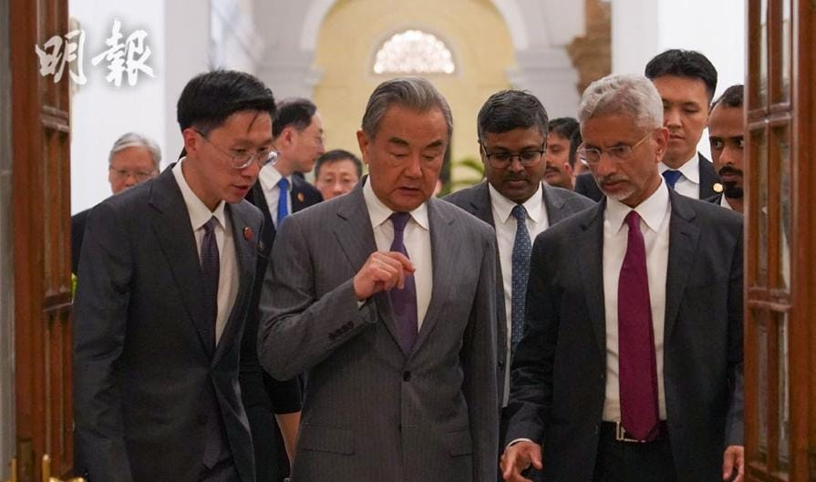

世界苦茶08月20日新闻 | 34条 | 中国印度举办边界会晤

中国印度举办边界会晤 | 中国青年失业率一月上升3.3% | 乌克兰称不接受任何领土协议 | 白宫开通TikTok帐号 | 特朗普支持率跌至安全范围边缘 | 马斯克正悄悄放缓组件新政党的计划
欢迎关注Substack
每日三條新聞解析（prompt升级）
苦茶数据
美元兑人民币：7.18（昨日7.18，前日7.18）
美元兑日元：147.52（昨日147.57，前日147.40）
上证指数：3725（昨日3727，前日3723）
标普500指数：6411（昨日6449，前日6449）
比特币：113604（昨日115060，前日115303）
布伦特原油：65.87（昨日66.21，前日66.06）
中国新闻
• 中国召开光伏座谈会 ：中国多部门联合召开光伏产业座谈会，进一步规范光伏产业竞争秩序。据中新社报道，中国工业和信息化部、中央社会工作部、国家发改委、国务院国资委、国家市场监管总局、国家能源局星期二联合召开光伏产业座谈会。会议要求，光伏产业各方要深刻认识规范竞争秩序对光伏产业高质量发展的重要意义，共同推动产业健康可持续发展。
• 中印举行边界会晤 ：最新一轮中印边界问题特别代表会晤星期二在新德里举行。中国外交部形容，中印进行了“全面深入、富有成效”的沟通；印度也称，印中关系呈现“上升势头”，边境地区保持平静。印度总理莫迪星期二晚在官邸会见到访的中国外交部长王毅；王毅据称向印度外长苏杰生保证，中国将恢复对印出口稀土和肥料。受访学者分析，中印相互释放善意，两国关系正恢复到2020年边境爆发流血冲突之前的状态。美国总统特朗普的关税政策成中印改善关系助推器，但两国仍欠缺战略互信。
• 绥化客运站闲置十年 ：中国黑龙江省绥化市耗资3600万元人民币兴建一座客运站，自2015年建成后闲置至今。当地官员坦承，工程存在手续不严密、体制机制管理不严等问题。中共中央机关报《人民日报》星期一报道，接获绥化市读者来信，反映当地“惠民工程”东城客运站建成十年一直没有启用，市民搭乘长途汽车仍在破旧的老客运站，十分不便。该媒体调查后发现，新客运站主体建筑在2015年已竣工，在闲置的十年间慢慢变旧。目前外立面已出现不少破损，墙面脱落、玻璃碎裂。
• 鄂尔多斯暴雨致死失联 ：中国内蒙古鄂尔多斯市受暴雨影响，导致三人死亡、三人失联。新华社星期二引述内蒙古自治区鄂尔多斯市有关部门消息报道，鄂尔多斯市多个旗区星期一出现暴雨天气；截至星期二上午10时30分，已导致东胜区三人遇难、达拉特旗三人失联。相关部门正全力搜救失联人士。根据内蒙古自治区气象局消息，星期二至星期四，内蒙古河套及以东地区有中到大雨和局部暴雨，并伴随短时强降雨、雷暴大风、冰雹等强对流天气，提醒公众积极防范可能衍生的灾害，并谨慎前往山区、河谷等灾害隐患点。
• 云南14岁男生杀同学 ：中国云南一名14岁男生据报欲性侵15岁同班女同学被对方反抗后，竟将女生掐死，被警方抓获。来自云南曲靖的死者父亲方先生告诉《潇湘晨报》，15岁女儿今年7月6日被同村14岁蒋姓男同学杀害。据父亲的说法，女儿当天晚间被一名女同学叫出去玩，去这名女同学的堂哥家，那晚有十几个人在她堂哥家，其中有几名女儿的同班同学，包括蒋姓男同学。
• 王毅将访巴基斯坦 ：中共政治局委员、中国外交部长王毅将访问巴基斯坦，并举行中巴外长战略对话。中国外交部发言人星期二在官网宣布，王毅将于8月20日至22日访问巴基斯坦，并同巴基斯坦副总理兼外长达尔举行第六次中巴外长战略对话。中国外交部发言人毛宁星期二在例行记者会上谈到中巴关系时说，中国和巴基斯坦是铁杆朋友，也是全天候战略合作伙伴。中巴关系不受第三方影响，当然也不针对第三方。
亚太印太新闻
• 菲澳加海军南海航行 ：菲律宾、澳大利亚和加拿大海军星期二在南中国海举行联合航行。路透社报道，菲律宾护卫舰何塞·黎刹号、澳洲驱逐舰布里斯班号和加拿大护卫舰魁北克城号参与了此次联合行动。菲律宾军方官员指出，这次行动不针对任何国家。
• 金正恩斥韩美军演 ：韩美首脑会谈在即，朝鲜领导人金正恩痛斥韩美联合军演为“最敌对的挑衅”，并呼吁加快核武装进程。这被视为是对韩国怀柔政策的又一次否决，也是朝鲜提前向韩美领导人表明不接受无核化之举。朝鲜《劳动新闻》星期二报道，金正恩前一天在平安南道南浦造船厂视察5000吨级新型驱逐舰崔贤号的武装体系综合试验及海军训练情况。崔贤号于今年4月下水，被称为“朝鲜版宙斯盾驱逐舰”，搭载全方位监视的相控阵雷达，是朝鲜海军现代化的重要标志。
• 泰国雇用1万斯里兰卡工 ：泰国一名高级官员星期二说，内阁已批准雇用1万名斯里兰卡工人，以解决泰柬两国发生边境冲突后，柬埔寨工人回国造成的劳动力短缺。路透社报道，国际劳工组织的数据显示，由于人口老龄化和劳动力萎缩，泰国的农业、建筑业和制造业领域雇佣了至少300万名注册外国劳工。泰国劳工部长蓬卡温告诉记者，目前已有3万多名斯里兰卡工人注册，第一阶段将有1万名工人被派往泰国。他补充说，尼泊尔、孟加拉国、印度尼西亚和菲律宾的工人也可以申请。
• 泰缅妙瓦底口岸关闭 ：泰缅两国间最繁忙的贸易口岸妙瓦底大桥星期二连续第二天关闭。法新社报道，缅甸军方边防部队发言人奈貌佐说，妙瓦底口岸自星期一起关闭，禁止“贸易车辆”通行。根据泰国海关数据，妙瓦底口岸每月承载着泰缅两国间超过1.2亿美元的贸易额。
• 日本无人机巡钓鱼岛 ：日本海上保安厅投入大型无人机“海上守卫者”，在尖阁诸岛上空警戒中国船只。据日本共同社报道，多名日中消息人士星期一透露，“海上守卫者”从今年4月起投入使用。“海上守卫者”由地面人员负责操控，对中国海警船进行警戒监视和图像拍摄。
• 李四川支持率大幅领先 ：台湾年代民调中心发布的民调结果显示，台北市副市长李四川是明年新北市长的热门人选。综合中时新闻网和三立新闻网报道，年代民调中心星期一公布2026年新北市长选情民意调查结果显示，若国民党出李四川角逐，他的支持率为31.6%，远高于现任新北副市长刘和然的4.2%，有64.2%尚未明确表态。
• 台湾军人参加美军演 ：今年有超过500名台湾军人参加了美军“北方打击”的年度联合军事演习，作战模拟场景还首次从欧洲转向印太地区。美国总统特朗普近期声称，中国国家主席习近平曾表示，在特朗普总统任内不会攻打台湾。台湾外交部针对这番言论回应说，必须靠自身力量保障台湾安全。根据美国国防部和军事专刊《星条旗报》报道，“北方打击”演习于上星期六结束，今年有超过500名台湾军人参加了演习。
• 台湾学者联署反核三 ：台湾530多位学者联署反对第三核能发电厂重启公投案，呼吁选民在星期六举行的公投，投下不同意票。据台湾《联合报》报道，由百位跨系所学者所发起的“反对核三重启，稳健能源转型—学术界不同意第21号公投案”声明连署，截至星期二已有超过530位学者联署。反对核三重启的人士认为，台湾地处地震带，加上造山运动活跃，假如核三发生福岛等级的核灾，全台都可能成为永久隔离区，高呼星期六公投必须投下不同意票。
• 金正恩要求加快核武装 ：金正恩8月18日视察朝人民军海军崔贤号驱逐舰，了解该舰武器系统综合运行测试和水兵训练及生活情况，听取崔贤级三号舰建造情况及其远景计划汇报。金正恩强调，崔贤号要按计划在10月内进入舰艇性能及作战执行能力评估课目，要求“超高速增强海军作战能力”，创新现有军事理论和实践、快速推进核武装化。针对美韩近日起开始联演，金正恩称其“近来具有企图实现含有核要素的军事勾结”，“要求我们以主动而压倒性的变化作出回应”。
科技新闻
• 白宫开通TikTok账号 ：美国白宫周二开通了TikTok账号，利用这款短视频应用在美国的逾 1.5 亿用户传播特朗普总统的政策主张。特朗普对TikTok青睐有加。他认为，TikTok帮助他赢得了年轻选民的支持，使其在2024年11月总统大选中击败了哈里斯。新账号@whitehouse已于周二晚间开始运行。白宫新闻秘书卡罗琳·莱维特表示：“特朗普政府致力于通过尽可能多的受众和平台，将特朗普总统取得的历史性成就传达给美国人民。在总统竞选期间，特朗普总统的讯息在TikTok上占据主导地位，我们很高兴能够在这些成功的基础上，继续以此前任何一届政府都未曾采用的方式进行沟通。”
• 英伟达拟推B30A晶片 ：路透社引述两位知情人士报道，英伟达正基于其最新的Blackwell架构，为中国开发一款新人工智能晶片，性能优于目前允许在华销售的H20。美国总统特朗普上周暗示，放宽英伟达向中国出口下一代AI晶片。但知情人士指出，考虑到华盛顿对中国获取美国人工智能技术的高度戒备，美国的监管批准仍存在极大不确定性。路透社报道称，这款暂定名为B30A的新晶片将采用单晶片设计，其计算力大约相当于英伟达旗舰B300加速卡双晶片架构的一半。单晶片设计，即所有核心电路集成在同一片硅晶圆上，而非分散在多个晶片上。
• 美国称英国已同意放弃要求苹果提供“后门”： 据美国官员称，在特朗普政府的施压下，英国已在其具争议性的要求上退缩，不再要求苹果提供可访问加密客户数据的 “后门”，从而结束了伦敦与华盛顿之间的外交争端。特朗普的国家情报总监图尔西·加巴德表示，英国已“同意放弃”要求苹果开通可访问“美国公民受保护的加密数据”的权限，美国总统此前将这一举动比作中国式监控。一位美国官员表示，副总统万斯最近在英国度假期间出面干预，确保英国同意撤回一项命令 —— 该命令试图迫使苹果解密其 iCloud 系统中存储的加密数据，而这些数据通常连这家iPhone制造商自身也无法访问。 （翻評：但是中國的雲上貴州監控，好像我們川總就不太有所謂。）
财经新闻
• 中国重启进口澳洲油菜籽 ：时隔五年，中国重启进口澳洲油菜籽。这项决定时值中加贸易关系陷入低谷。中国商务部上星期二发布公告，称调查机关初步认定，原产于加拿大的进口油菜籽存在倾销，将从星期四起向加拿大油菜籽加征75.8%的保证金作为临时反倾销措施。加拿大官方对北京的决定感到失望，但表示将与中国官员进行建设性对话，以解决各自的贸易担忧。加拿大是世界最大油菜籽出口国，中国绝大部分油菜籽源自加拿大。
• 中国青年失业率升至17.8% ：最新的官方数据显示，中国7月非在校16岁至24岁青年的失业率上升至17.8%，较6月上升3.3个百分点，创2024年8月以来新高。据路透社报道，中国国家统计局星期二发布的7月份分年龄组失业率数据显示，中国7月份城镇不包含在校生的16岁至24岁劳动力失业率为17.8%，较6月的14.5%有所上升。7月不包含在校生的25至29岁劳动力失业率为6.9%，较6月上升0.2个百分点；不包含在校生的30岁至59岁劳动力失业率则微跌0.1个百分点至3.9%。
• 海南发布个税优惠办法 ：中国海南自由贸易港发布享受个人所得税优惠政策的新管理办法。综合央视新闻和中新社报道，记者从海南省新闻办获悉，海南发布《海南自由贸易港享受个人所得税优惠政策高端紧缺人才清单管理办法》，对2022年发布的旧办法进行优化和完善。新办法优化了累计居住满183天的核算方法，将合理的离岛出差、休假、学习培训天数纳入居住天数统计范畴，同时明确在海南自贸港实际居住不得少于90天。
• 马国关税拖累经济预期 ：马来西亚投资、贸易及工业部长扎夫鲁说，鉴于马国面对美国祭出的19%关税，马国今年经济增长预测将下调0.6%至1.2%。根据《马来邮报》星期二报道，扎夫鲁在国会书面答复中说：“2026年的国内生产总值增幅预计将比2025年略有放缓，因为关税的影响将在全年持续显现。”他也说：“至于关税在交通、能源和食品等关键领域对通胀的影响，目前还为时过早，无法给出准确而明确的评估。”
• 印度豁免棉花关税 ：从8月19日至9月30日，印度将豁免棉花进口关税，以协助当地制衣产业提高竞争力。路透社报道，印度政府星期一发布公告宣布这项豁免关税的临时措施。它也普遍被视为印度对服装行业的一种纾困手段。本月早些时候，美国总统特朗普以印度继续进口俄罗斯石油为由，对印度商品加征25%的关税，这加剧了两国之间的紧张关系。新的关税率将于8月27日生效，这将使部分印度输美商品的关税提高至50%，为美国对贸易伙伴征收的最高关税之一。
• 中印恢复稀土化肥出口 ：印度媒体报道称，中国将恢复向印度出口急需的化肥、稀土矿物以及盾构机。印度《经济时报》星期二报道，在印度进行为期两天访问的中国外交部长王毅星期一向印度外长苏杰生保证，随着两国关系走向正常化，中国已开始回应印度在这三项上的请求。报道引述知情人士透露，印方的理解是相关货物的运输实际上已经启动。
• 美国有意入股台积电、三星等芯片制造商： 两位知情人士透露，美国商务部长霍华德·卢特尼克还在研究入股其他芯片制造商的可能性，这些公司根据《芯片法案》获得了在美国建设工厂的补助资金。卢特尼克考虑扩大原为英特尔准备的芯片补助换股权计划，他还在探索如何通过芯片法案资金换取美光科技、台积电和三星等企业的股权。目前大部分芯片补助尚未拨付。美国财政部长斯科特·贝森特也参与了芯片法案的相关讨论，但推动这一进程的主要是卢特尼克。商务部负责管理总额为 527亿美元的芯片法案资金。该法案为美国境内的芯片研发和厂房建设提供资金和拨款。卢特尼克一直在推动补助换持股的想法，而且特朗普对此表示支持。
俄乌战争
• 俄罗斯军队合同兵招募降至两年来最低： 2025年下半年大约有37,900人签署军队合同，比去年同期的92,800人少了约2.5倍。相比之下，2025年上半年签署的合同有127,500份。据媒体报道，根据安全委员会副主席德米特里·梅德韦杰夫公布的官方数据，2025年上半年有210,000名合同兵加入军队，这一数字比预算数据高出约1.6倍。
• 乌克兰不会接受任何涉及领土让渡给俄罗斯的协议 ：FT揭露的一份文件显示，乌克兰不会接受任何包括领土让渡给俄罗斯的协议，并坚持停火应是全面和平协议的第一步。基辅还拒绝了普京在阿拉斯加向特朗普提出的建议，即如果乌克兰撤军东部部分被占领的顿涅茨克和卢甘斯克地区，俄罗斯将冻结剩余前线。文件指出，这样做将为“俄军进一步快速推进至第聂伯罗市”提供立足点，并使普京能够“通过其他方式实现侵略目标”。
• 特朗普称美军不会进入乌克兰，欧洲将提供安全保障： 多国欧洲国家计划在俄乌战争结束后向乌克兰派遣军队，但美国总统唐纳德·特朗普在福克斯新闻上表示，美军不会加入他们。当被问及乌克兰安全保障的前景时，特朗普回答说，欧洲国家“会在早期阶段提供保障”。他说：“他们（指乌克兰）不会成为北约的一部分，但我们有欧洲国家，他们会提前投入。一些国家，比如法国、德国，还有英国，他们希望有地面部队。” 在特朗普看来，这不会成为问题。他补充说：“我认为普京已经厌倦了。我认为大家都厌倦了。但你永远不知道。未来几周我们会看到普京的情况，这是我能告诉你的。我们会看看事态如何发展。” 当被问及能否保证不会有美军驻乌时，特朗普明确作出保证。
国际新闻
• 微软员工抗议以色列合作 ：微软公司员工在该公司位于华盛顿州雷德蒙德的总部集会，意图向这家软件制造商加大压力，要求其停止与以色列的业务往来，以反对以色列在加沙的战争。抗议者于周二下午开始聚集在公司主园区最近重新开发区域中心的广场，该园区位于西雅图东部郊区小镇，占地约 500 英亩。前微软员工、抗议领袖霍萨姆·纳斯尔通过麦克风向 “朋友和同事” 发表讲话时说：“我们来到这里是因为在过去22个月的种族灭绝中，由微软支持的以色列每小时都在杀害、残害巴勒斯坦儿童。”活动人士到达约一小时后，一名雷德蒙德警察用其SUV车上的扬声器警告说，他们是非法侵入，如果继续逗留，将被逮捕。
• 鲁比奥撤销6000签证 ：美国国务卿鲁比奥上任至今的七个月里，已撤销6000份学生签证。国务院星期一通报，这些学生是因逾期逗留和违法而被撤销签证，其中大多数人涉及袭击、酒驾、入室盗窃以及支持恐怖主义。鲁比奥上任后援引一项鲜为人知的法律，取消那些被认定“损害美国外交利益”的学生签证。国务院并未披露遭撤销签证的学生国籍，但鲁比奥曾公开表态，将更积极地针对来自中国的学生。
• 美巴尔的摩港船爆炸 ：一艘满载煤炭的散货船从马里兰州巴尔的摩港口启航前往东非时，突然发生爆炸，致港口主要航道封闭。据美国海岸警卫队星期二发布的新闻稿，它及其合作机构正在应对巴尔的摩港发生的船只爆炸，斯帕罗斯角一带直至“弗朗西斯·斯科特·基”大桥原址的航道禁止所有船只通行。大桥在去年因船只撞击而倒塌。美国官员说，星期一的货船爆炸事故未造成人员受伤。爆炸后货船发出了求救信号，据悉，当时货船在接近去年大桥倒塌现场。影片显示，爆炸产生的火焰直冲天际，随后冒出大量浓烟，笼罩帕塔普斯科河。
• 联合国称去年383援人员遇害 ：联合国星期二说，去年共有383名人道救援人员遇害，写下新高记录，并警告今年的伤亡人数同样令人不安。法新社报道，联合国星期二在“世界人道主义日”公布上述消息。联合国指出，去年的死亡人数较前年增加了31%，主要原因是加沙持续不断的冲突和苏丹冲突，分别造成181名和60名人道援助人员遇害。
• 特朗普支持率跌至40% ：最新民调显示，美国总统特朗普近几周的支持率维持在40%，是他重返白宫以来的最低水平。这项针对4400多名美国成人展开为期六天的路透社／益普索民调显示，特朗普的支持率与上月底进行的民调维持在40%，比他1月20日刚上任后不久的47%跌了七个百分点。民调也显示，在去年选举中支持特朗普的西班牙裔选民，如今对他的看法趋于负面，只有约32%认可他就任以来的表现，写下今年他们对特朗普的最低支持率。
• 马斯克正在悄悄放缓组建新政党的计划： 知情人士透露，马斯克正在悄悄放缓组建新政党的计划。马斯克告诉盟友，他希望将注意力集中在自己的公司上，不愿因自己组建可能分流共和党选票的第三政党疏远共和党内的强势人物。马斯克的态度和上月初相比发生了明显转变。当时他表示将成立所谓的美国党。在考虑成立政党期间，马斯克把部分精力放在了与副总统万斯保持联系上。马斯克近几周一直与万斯保持联系，并向盟友坦言，如果他真的组建政党，将会损害与副总统的关系。知情人士称，马斯克及其盟友曾告诉亲信，如果万斯决定在2028年参选总统，他可能会动用其部分财力来支持万斯。